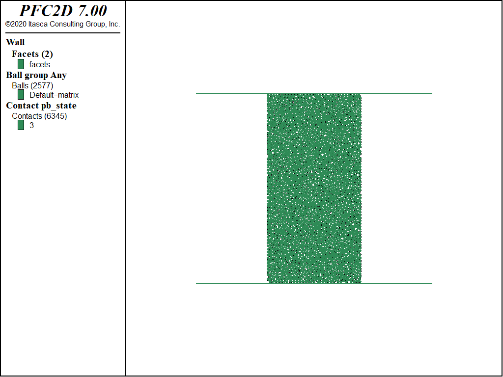
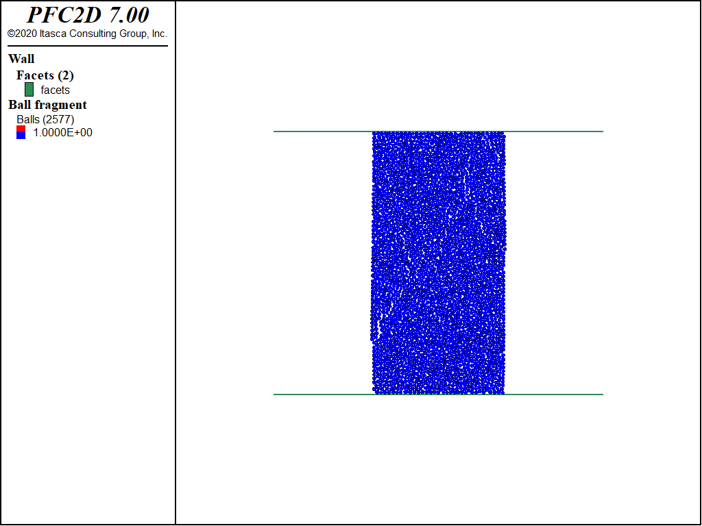
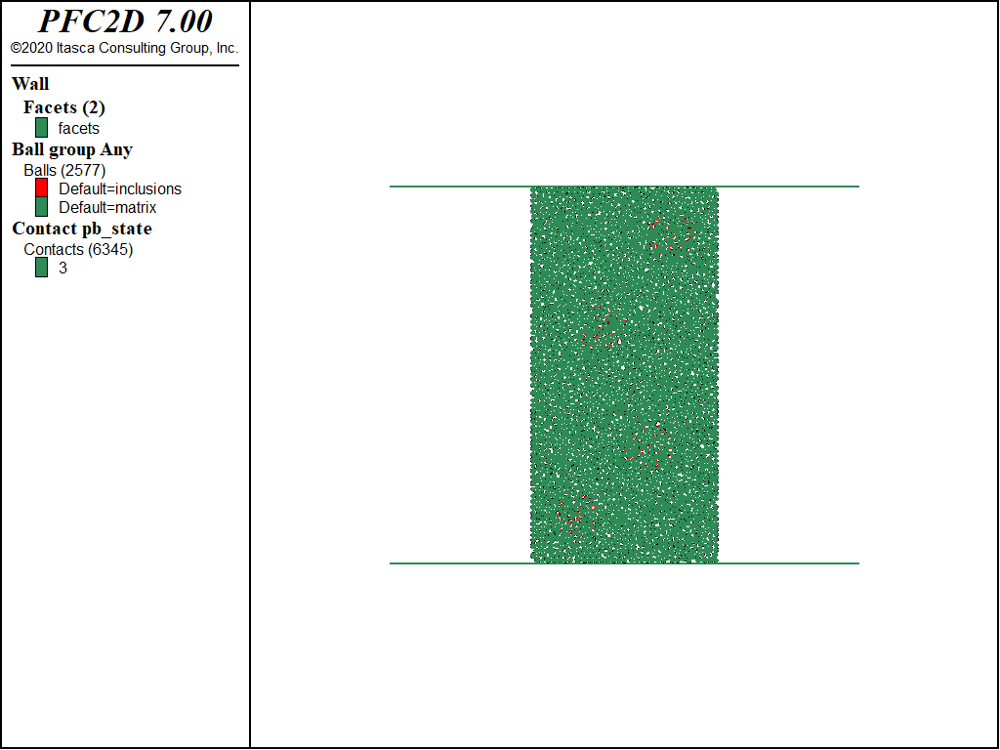
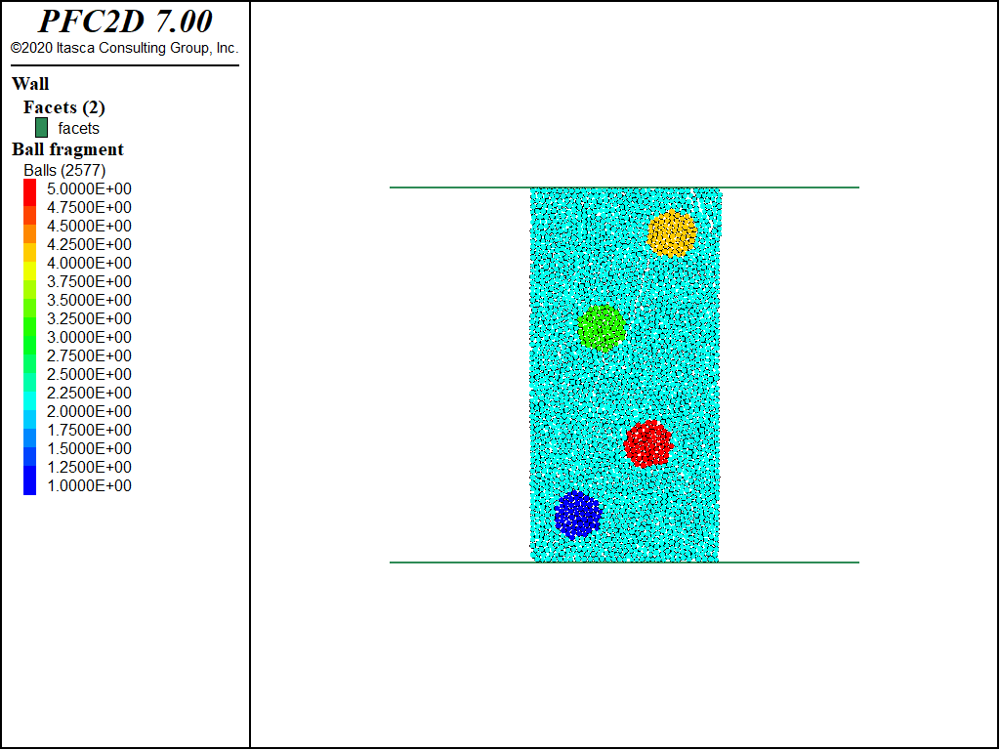
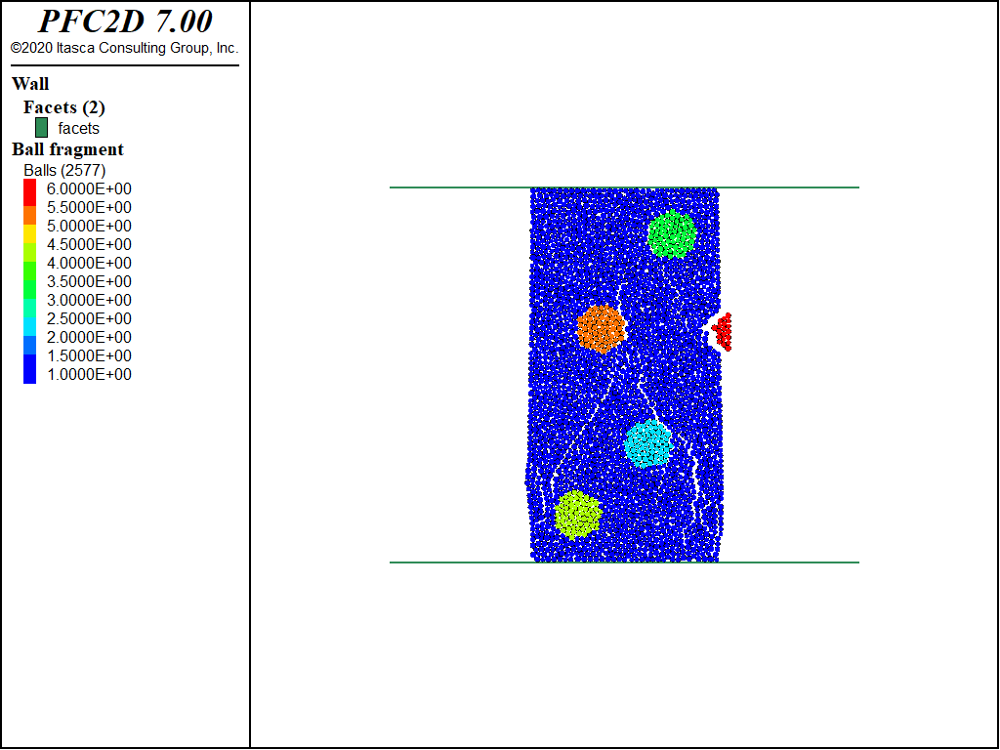
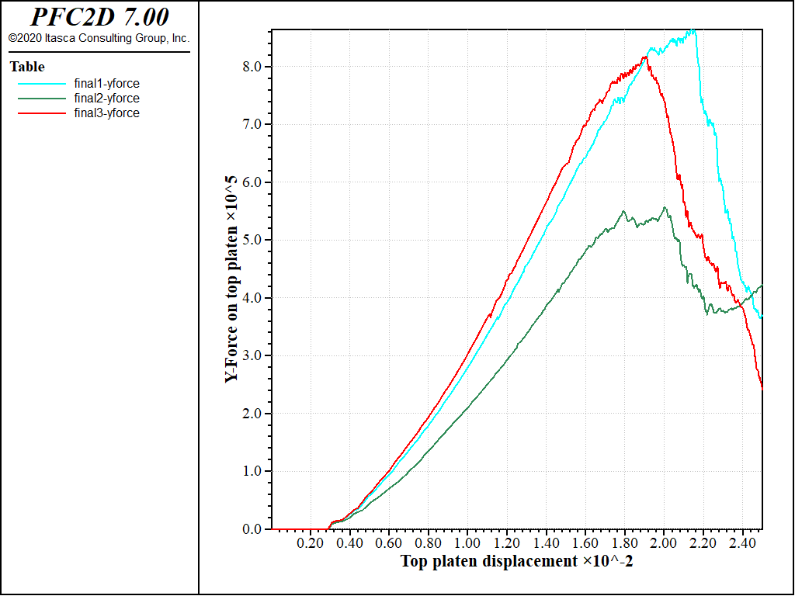

基体中的夹杂物
引言
注意
本算例的项目文件可在 PFC 中查看或运行。[1]所用的数据文件（data files）列于本算例末尾。
对具有均匀力学性质的黏结颗粒模型（BPM）进行无侧限压缩试验。对试样中的选定区域（夹杂物）赋予较小或较大的刚度参数，然后重复该试验。本教程演示 接触模型分配表（CMAT）（Contact Model Assignment Table (CMAT)） 的高级用法，以构建具有力学性质空间分布的复杂材料。使用了 linear 和 线性平行黏结（linear parallel bond） 接触模型。也可使用 材料建模支持（material-modeling support） 包创建和测试 BPM；不过，需要对其进行修改才能加入夹杂物。
数值模型
本例的完整数据文件（2D）为“inclusions.dat (2D)”。下文讨论该文件中的部分行。构造黏结颗粒试样的初始阶段不再讨论，因为其过程与“生成黏结集合体（Generating a Bonded Assembly）”教程中给出的过程类似。请注意，球颗粒已使用 ball distribute 命令生成，并且全部分配了 matrix 分组标识符。
以下所示的行创建顶部和底部墙压板，为其指定竖向速度，并设置历史监测。
; 为试验做准备：添加上下压板并设置监测
contact cmat default type 'ball-facet' model linear ...
property kn 1e8 ks 5e7 fric 0.25
wall generate id 1 plane position 0.0 4.015
wall generate id 2 plane position 0.0 -4.015
wall attribute velocity-y -0.005 range id 1
wall attribute velocity-y 0.005 range id 2
wall history force-contact-y id 1
wall history force-contact-y id 2
wall history displacement-y id 2
ball attribute displacement 0.0
model save 'initial1'
初始系统如 图 1（Figure 1） 所示。


图 1：压缩前具有均匀性质的初始黏结系统。
第一次压缩试验通过以下各行执行：
; 执行单轴抗压试验（激活碎片追踪）
fragment register ball-ball
fragment activate time 0.1
model solve time 5.0
model save 'final1'
请注意，启用 破碎块体追踪（fragment tracking） 以监测试验过程中 BPM 的破碎情况。最终状态如 图 2（Figure 2） 所示。


图 2：压缩后具有均匀性质的系统最终状态。
接下来，修改初始 BPM，以在选定的模型区域中模拟夹杂物：
; 使用组来识别夹杂物
model restore 'initial1'
ball group 'inclusions' range circle center 1.0 3.0 rad 0.5
ball group 'inclusions' range circle center -0.5 1.0 rad 0.5
ball group 'inclusions' range circle center 0.5 -1.5 rad 0.5
ball group 'inclusions' range circle center -1.0 -3.0 rad 0.5
model save 'initial-groups'
夹杂物内部的球颗粒被赋予 inclusions 分组标识符。
压缩前的系统如 图 3（Figure 3） 所示。


图 3：压缩前含软夹杂物的初始系统。
接下来，修改夹杂物内部和基体内部的接触属性。分组标识符用于识别位于基体内部和夹杂物内部的接触。需要 contact cmat apply 命令来将修改后的默认 CMAT 条目应用于已有接触。随后重复进行压缩试验。在这种情况下，夹杂物比基体更软。另一段与之对应的命令（此处未显示——请参阅下文的完整数据文件清单）重复这些操作，以生成刚度大于基体的夹杂物。
; 修改接触模型参数 - 更软的夹杂物
contact cmat default type ball-ball model linear ...
property kn 1e7 ks 5e6 fric 0.25 lin_mode 1
contact cmat add 1 model linearpbond ...
property kn 1e8 ks 5e7 fric 0.25 lin_mode 1 ...
pb_kn 1e8 pb_ks 5e7 pb_ten 2e5 pb_coh 5e4 pb_fa 20 ...
range group 'matrix' matches 2
contact cmat add 2 model linearpbond ...
property kn 1e7 ks 5e6 fric 0.25 lin_mode 1 ...
pb_kn 1e7 pb_ks 5e6 pb_ten 2e4 pb_coh 5e3 pb_fa 20 ...
range group 'inclusions' matches 2
contact cmat apply
contact method bond gap 0.0
; 重复单轴抗压试验
fragment register ball-ball
fragment activate time 0.1
model solve time 5.0
model save 'final2'
图 4 和 图 5 分别显示了夹杂物比基体更软和更硬两种情况下压缩后的模型。可以看出，破坏起始于软夹杂物附近，由此产生的应力集中驱动破坏穿过相邻的软夹杂物，如 图 4（Figure 4） 所示。请注意，所有软夹杂物中均已发生一定程度的破坏。另一方面，对于硬夹杂物的情况（图 5（Figure 5）），破坏主要发生在基体中以及夹杂物/基体边界处。


图 4：压缩后含软夹杂物的最终系统。


图 5：压缩后含硬夹杂物的最终系统。
对于全部三种情况，图 6（Figure 6） 展示了作用于顶部压板的接触力合力 y 分量随压板 y 位移的变化过程。软夹杂物显著降低了 BPM 的屈服强度以及峰后响应。另一方面，硬夹杂物对这些响应几乎没有影响。


图 6：作用于顶部压板的力 y 分量随压板位移的变化历史，分别对应均匀材料（绿色）、软夹杂材料（红色）和硬夹杂材料（蓝色）三种情况。
讨论
本教程介绍了如何使用 接触模型分配表（CMAT）（Contact Model Assignment Table (CMAT)） 构建具有非均质力学性质的复杂模型。文中讨论了在均匀材料以及含软、硬夹杂物的非均质材料上进行的无侧限压缩试验结果。
数据文件
inclusions.dat (2D)
; 文件名：inclusions.dat (2D)
;
; PFC2D 教程 - 演示使用 CMAT 构建复杂材料，
; 其力学性质具有空间分布
;
;=========================================================================
model new
model large-strain on
model title 'Soft and Stiff Inclusions in a Matrix'
; 构建初始黏结颗粒模型
model domain extent -5 5
contact cmat default model linear property kn 1e5
wall generate box -2 2 -4 4
model random 10001
ball distribute porosity 0.08 radius 0.05 0.07 box -2 2 -4 4 group 'matrix'
ball attribute position mult 0.9
ball attribute density 1000.0 damp 0.7
model cycle 1000 calm 10
model mechanical timestep scale
model solve ratio-average 1e-5
model mechanical timestep auto
model solve ratio-average 1e-5
contact cmat default model linearpbond ...
property kn 1e8 ks 5e7 fric 0.25 lin_mode 1 ...
pb_kn 1e8 pb_ks 5e7 pb_ten 2e5 pb_coh 5e4 pb_fa 20
contact cmat apply
contact method bond gap 0.0
wall delete
model solve elastic ratio-average 1e-5
; excerpt-hkht-start
; 为试验做准备：添加上下压板并设置监测
contact cmat default type 'ball-facet' model linear ...
property kn 1e8 ks 5e7 fric 0.25
wall generate id 1 plane position 0.0 4.015
wall generate id 2 plane position 0.0 -4.015
wall attribute velocity-y -0.005 range id 1
wall attribute velocity-y 0.005 range id 2
wall history force-contact-y id 1
wall history force-contact-y id 2
wall history displacement-y id 2
ball attribute displacement 0.0
model save 'initial1'
; excerpt-hkht-end
; excerpt-ubcs-start
; 执行单轴抗压试验（激活碎片追踪）
fragment register ball-ball
fragment activate time 0.1
model solve time 5.0
model save 'final1'
; excerpt-ubcs-end
; excerpt-wepg-start
; 使用组来识别夹杂物
model restore 'initial1'
ball group 'inclusions' range circle center 1.0 3.0 rad 0.5
ball group 'inclusions' range circle center -0.5 1.0 rad 0.5
ball group 'inclusions' range circle center 0.5 -1.5 rad 0.5
ball group 'inclusions' range circle center -1.0 -3.0 rad 0.5
model save 'initial-groups'
; excerpt-wepg-end
; excerpt-iljg-start
; 修改接触模型参数 - 更软的夹杂物
contact cmat default type ball-ball model linear ...
property kn 1e7 ks 5e6 fric 0.25 lin_mode 1
contact cmat add 1 model linearpbond ...
property kn 1e8 ks 5e7 fric 0.25 lin_mode 1 ...
pb_kn 1e8 pb_ks 5e7 pb_ten 2e5 pb_coh 5e4 pb_fa 20 ...
range group 'matrix' matches 2
contact cmat add 2 model linearpbond ...
property kn 1e7 ks 5e6 fric 0.25 lin_mode 1 ...
pb_kn 1e7 pb_ks 5e6 pb_ten 2e4 pb_coh 5e3 pb_fa 20 ...
range group 'inclusions' matches 2
contact cmat apply
contact method bond gap 0.0
; 重复单轴抗压试验
fragment register ball-ball
fragment activate time 0.1
model solve time 5.0
model save 'final2'
; excerpt-iljg-end
; 修改接触模型参数 - 更硬的夹杂物
model restore 'initial-groups'
contact cmat default type ball-ball model linear ...
property kn 1e8 ks 5e7 fric 0.25 lin_mode 1
contact cmat add 1 model linearpbond ...
property kn 1e8 ks 5e7 fric 0.25 lin_mode 1 ...
pb_kn 1e8 pb_ks 5e7 pb_ten 2e5 pb_coh 5e4 pb_fa 20 ...
range group 'matrix' matches 2
contact cmat add 2 model linearpbond ...
property kn 1e9 ks 5e8 fric 0.25 lin_mode 1 ...
pb_kn 1e9 pb_ks 5e8 pb_ten 2e6 pb_coh 5e5 pb_fa 20 ...
range group 'inclusions' matches 2
contact cmat apply
contact method bond gap 0.0
; 重复单轴抗压试验
fragment register ball-ball
fragment activate time 0.1
model solve time 5.0
model save 'final3'
program return
;=========================================================================
; 文件结束：inclusions.dat (2D)
尾注
| [1] | 要在 PFC 中查看本项目，请使用程序菜单。
⮡ PFC |
| 这些内容对您有帮助吗？… | FLAC3D © 2019, Itasca | 原文更新于 2020 年 10 月 8 日 |